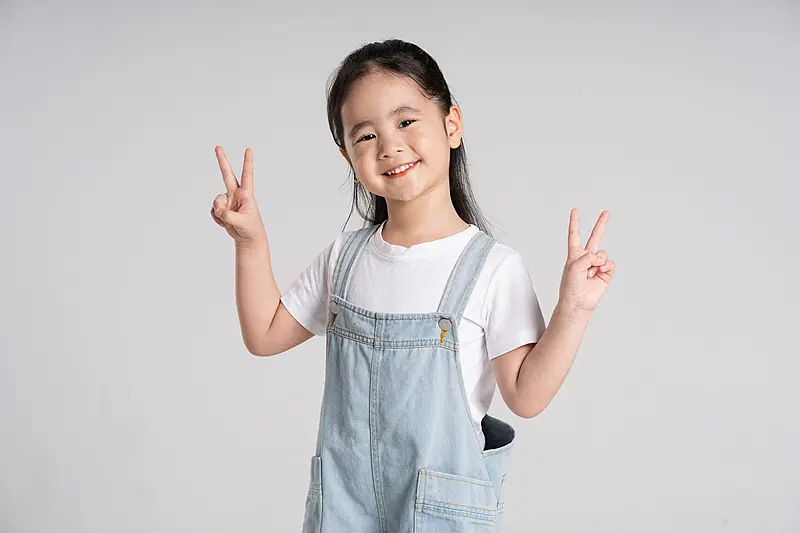
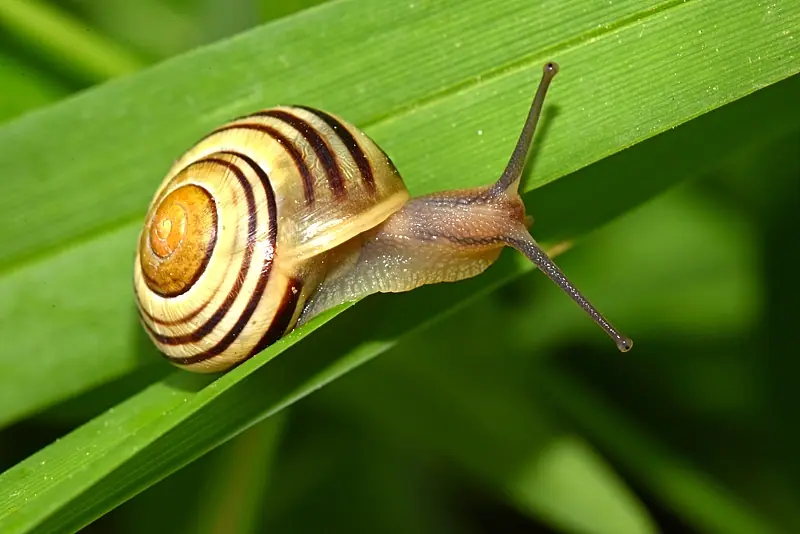

Giáo trình HSK 2 · Lesson 11我最喜欢吃中国菜
Wǒ zuì xǐhuan chī Zhōngguó cài
Tôi thích ăn món Trung Quốc nhất
Mục tiêu bài khóa
Sau bài học, người học có thể nói về tình trạng sức khỏe, mô tả trạng thái đang tiếp diễn và diễn đạt mức độ cao nhất.
Tình trạng sức khỏeMô tả đau đầu, cơ thể không khỏe, mua thuốc và đi bệnh viện.
Trợ từ 着Biểu thị sự tiếp diễn của một hành động hoặc trạng thái.
Phó từ 最Nói điều mình thích nhất, tốt nhất hoặc cao nhất.
Khởi động · 热身
Chọn một từ, sau đó chọn hình ảnh phù hợp. Hoàn thành đủ bốn cặp.
💡 Hãy chọn một từ trước.
Mô tả hình bằng động từ hoặc cụm động từ
Từ vựng · 生词
Nhấn vào thẻ để lật. Mặt trước có từ, nghĩa, loại từ và nút phát/dừng. Mặt sau có đúng hình ảnh và câu ví dụ trong PPT.
Từ mới bài khóa 1Từ mới bài khóa 2Từ mới bài khóa 3Từ mới bài khóa 4
头
tóu
đầu
danh từChạm vào vùng trống của thẻ để xem hình và ví dụ
他头疼，所以没来上课。 🔊Tā tóuténg, suǒyǐ méi lái shàngkè.
Anh ấy bị đau đầu nên không đến lớp. 请不要低头看手机。 🔊Qǐng bù yào dītóu kàn shǒujī.
Xin đừng cúi đầu xem điện thoại. 疼
téng
đau
tính từChạm vào vùng trống của thẻ để xem hình và ví dụ
你怎么了？是不是肚子疼？ 🔊Nǐ zěnme le? Shì bù shì dùzi téng?
Bạn sao vậy? Có phải bị đau bụng không? 吃太多糖会牙疼。 🔊Chī tài duō táng huì yáténg.
Ăn quá nhiều kẹo sẽ bị đau răng. 经常
jīngcháng
thường xuyên
phó từChạm vào vùng trống của thẻ để xem hình và ví dụ
北京的夏天经常下雨。 🔊Běijīng de xiàtiān jīngcháng xiàyǔ.
Mùa hè ở Bắc Kinh thường hay mưa. 我们经常一起去公园玩。 🔊Wǒmen jīngcháng yìqǐ qù gōngyuán wán.
Chúng tôi thường cùng nhau đi công viên chơi. 动
dòng
động, di chuyển
động từChạm vào vùng trống của thẻ để xem hình và ví dụ

他站在那里，一动不动。 🔊Tā zhàn zài nàlǐ, yídòng bù dòng.
Anh ấy đứng ở đó, không hề cử động. 你不要动，我帮你拍照。 🔊Nǐ bù yào dòng, wǒ bāng nǐ pāizhào.
Bạn đừng cử động, tôi chụp ảnh cho bạn. 着
zhe
biểu thị hành động hoặc trạng thái đang tiếp diễn
trợ từ trạng tháiChạm vào vùng trống của thẻ để xem hình và ví dụ
妹妹笑着对我说：“再见！” 🔊Mèimei xiào zhe duì wǒ shuō: “Zàijiàn!”
Em gái vừa cười vừa nói với tôi: “Tạm biệt!” 他唱着歌走进教室。 🔊Tā chàng zhe gē zǒu jìn jiàoshì.
Anh ấy vừa hát vừa đi vào lớp học. 路上
lùshang
dọc đường, trên đường đi
danh từChạm vào vùng trống của thẻ để xem hình và ví dụ
我现在在路上，有事回家再说吧。 🔊Wǒ xiànzài zài lùshàng, yǒushì huí jiā zài shuō ba.
Bây giờ tôi đang ở trên đường, có gì về nhà rồi nói sau nhé. 去学校的路上，我看到一只猫。 🔊Qù xuéxiào de lùshàng, wǒ kàn dào yì zhī māo.
Trên đường đi học, tôi nhìn thấy một con mèo. 慢
màn
chậm
tính từChạm vào vùng trống của thẻ để xem hình và ví dụ

你走得真慢，火车要开了。 🔊Nǐ zǒu de zhēn màn, huǒchē yào kāi le.
Bạn đi chậm quá, tàu sắp chạy rồi. 他开车很慢。 🔊Tā kāi chē hěn màn.
Anh ấy lái xe rất chậm. 进
jìn
vào, vô, đi vào
động từChạm vào vùng trống của thẻ để xem hình và ví dụ
进来吧，门没关。 🔊Jìn lái ba, mén méi guān.
Vào đi, cửa chưa đóng. 我看见他走进教室了。 🔊Wǒ kànjiàn tā zǒu jìn jiàoshì le.
Tôi thấy anh ấy đi vào lớp học rồi. 药
yào
thuốc
danh từChạm vào vùng trống của thẻ để xem hình và ví dụ
你今天吃过药了吗？ 🔊Nǐ jīntiān chī guò yào le ma?
Hôm nay bạn đã uống thuốc chưa? 医生说这药一天吃两次。 🔊Yīshēng shuō zhè yào yì tiān chī liǎng cì.
Bác sĩ nói thuốc này mỗi ngày uống hai lần. 身体
shēntǐ
thân thể, cơ thể
danh từChạm vào vùng trống của thẻ để xem hình và ví dụ
你妈妈身体怎么样了？ 🔊Nǐ māma shēntǐ zěnme yàng le?
Sức khỏe mẹ bạn dạo này thế nào rồi? 我经常跑步，身体很好。 🔊Wǒ jīngcháng pǎobù, shēntǐ hěn hǎo.
Tôi thường xuyên chạy bộ, sức khỏe rất tốt. 时
shí
lúc, khi
danh từChạm vào vùng trống của thẻ để xem hình và ví dụ
我有时坐地铁去学校。 🔊Wǒ yǒushí zuò dìtiě qù xuéxiào.
Tôi có khi đi tàu điện ngầm đến trường. 我回家时妈妈正在做饭。 🔊Wǒ huí jiā shí māma zhèngzài zuòfàn.
Lúc tôi về nhà thì mẹ đang nấu cơm. 最
zuì
nhất
phó từChạm vào vùng trống của thẻ để xem hình và ví dụ

今天是今年最热的一天。 🔊Jīntiān shì jīnnián zuì rè de yì tiān.
Hôm nay là ngày nóng nhất trong năm nay. 他最希望能和爸爸一起去旅游。 🔊Tā zuì xīwàng néng hé bàba yìqǐ qù lǚyóu.
Anh ấy mong nhất là có thể đi du lịch cùng bố. 药店
yàodiàn
hiệu thuốc, tiệm thuốc
danh từChạm vào vùng trống của thẻ để xem hình và ví dụ
妈妈让我去药店买药。 🔊Māma ràng wǒ qù yàodiàn mǎi yào.
Mẹ bảo tôi đi hiệu thuốc mua thuốc. 药店在医院的左边。 🔊Yàodiàn zài yīyuàn de zuǒbiān.
Hiệu thuốc ở bên trái bệnh viện. Bài khóa · 课文
Cách trình bày theo Bài 15: ảnh ngữ cảnh ở bên trái, hội thoại dạng bong bóng bên phải. Dùng nút mũi tên để chuyển bài khóa.
Tương tác đóng vai
Chọn bài khóa và vai. Lời thoại của vai đã chọn sẽ bị ẩn. Phần này chỉ có chữ Hán, không pinyin và không nghĩa.
Củng cố từ vựng
Bấm vào nghĩa tiếng Việt để lật đáp án, sau đó hoàn thành câu hỏi đọc hiểu.
Câu hỏi đọc hiểu
Mẫu câu cần nhớ: 外面下着雪。王老师开着车呢。我最喜欢吃中国菜。